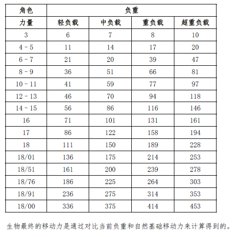
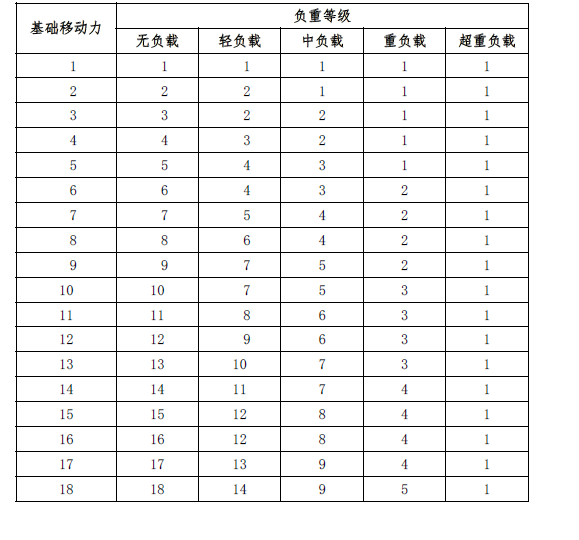

负重
负重
即使是最快的短跑运动员，当他在背着140
磅盔的甲、武器还有装备的时候，他也无法移动得太快。一个角色的负重分为五个等级：无、轻、重、超重。在《玩家手册》的第六章：财产与装备中对负重有详细的描述。
要确定角色负重的等级，首先得要找到他的力量值在表中对应的那一行。表中的数字是每一级的临界值。一个有14 力量的角色在背负56 磅的装备之前是无负重，到背上86
磅重的装备是轻负重，到携带116 磅工具就是中负重，以及到146
磅时是超重负重。为了负重而计算怪物的力量，可以在怪物的基础生命骰（忽略调整）加上31/2 点每体型等级（向下取整）。因此，一个食人魔有大约18的力量值（大型生物是第4级体型，4×31/2=14，加上生命骰=18）。

